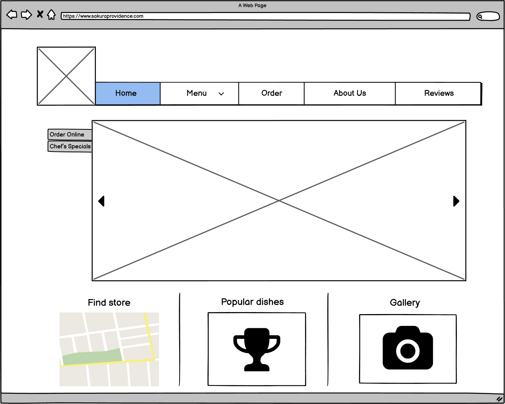

In this project, I did a redesign for the website of Sakura, a local Japanese restaurant. My redesign solved the usability problems in the original design and provided a better visual presentation.
My redesign is also made to be responsive, so that the layout of the page changes when users are viewing from screens with different sizes. This can make sure that the important information is always
displayed properly with any screen sizes.
Usability Problems
Fig1: A screenshot of the original interface
There are several usability problems with the original interface: (click on the image to navigate to the website)
The website uses many different fonts, which makes the overall visual design inconsistent.
There are three 'Order Online' textbox on this page, and each of them link to a different destination, which would confuse the users.
There is no padding between each elements, and it makes the website seem crowded.
This original interface has no responsive design at all, so the layout would not change with different screen size.
There are also a few accessibility concerns detected, mainly about low contrast for certain region in the website and redundant title text, and the screen reader could not
really interpret the webpage well as most information displayed is quite messy.
Low-Fidelity Prototype
To redesign the interface, I first created a low-fidelity prototype with Balsamiq. I tried to keep all the important information and links, but at the same time made improvements based on the usability problems
detected earlier.
Below is how my low-fidelity prototype looks like.

Fig 2: Low-Fidelity Prototype for the interface. From left to right: desktop display, mobile display and tablet display
Compared to the original interface, my low-fidelity prototype has made a few significant changes:
I made the different sectors more structured and the content more formatted.
I added padding between each component of the page to make the displayed information more understandable.
I designed the interface so that they are responsive of three different screen sizes: laptop, tablet and cell phone.
High-Fidelity Prototype
After the low-fidelity prototype, I also made a high-fidelity prototype for this interface using Figma.
Fig 3: High-Fidelity Prototype for the interface. From left to right: desktop display, mobile display and tablet display
For the high-fidelity prototype, I further designed the color and other visual components of the webpage:
I used a consistent font for all components in the interface.
I designed a new logo for the restaurant to better demonstrate its popular dishes.
I redesigned the color theme to make it more aesthetically appealing.
Visual Design Style Guide
For my redesign of the interface, I also created a visual design style guide.
There should be three major components of this webpage, the navigation bar on top, the central info image below, and three smaller images at the bottom.
All buttons from the navigation bar should be directed to a different dedicated webpage, and a dropdown menu should be developed for the menu button as well.
The image at the center should be navigate to the webpage for ordering online, and by clicking 'Chef's Special', the central image should change and navigate to menu now.
The three images at the bottom should also be links that navigate to Google Maps, Reviews and Gallery, respectively.
The font 'Red Rose' should be used for majority of the text, except for the navigation bar which uses 'Roboto', and the font size should be dynamic to the screen size.
When the screen is small, align the navigation bar and three images vertically, also put two buttons on the top of the central image.
When the screen is large, align the navigation bar and three images horizontally, also put two buttons on the left of the central image.
Responsive Redesign
I made my redesign for the interface into an actual webpage, and I also made it responsive, so that the page provides a nice presentation on screens with different sizes. It accomplished all of
the improvements proposed during prototyping, and it resembles most of the visual style as designed in high-fidelity prototype. (Click on the image to navigate to the redesigned website)
Fig 4: Responsive Redesign Prototype for the interface. From left to right: desktop display, mobile display and tablet display